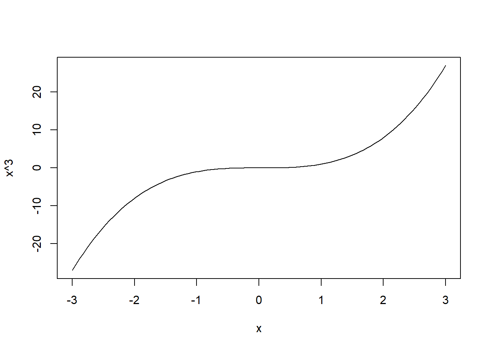
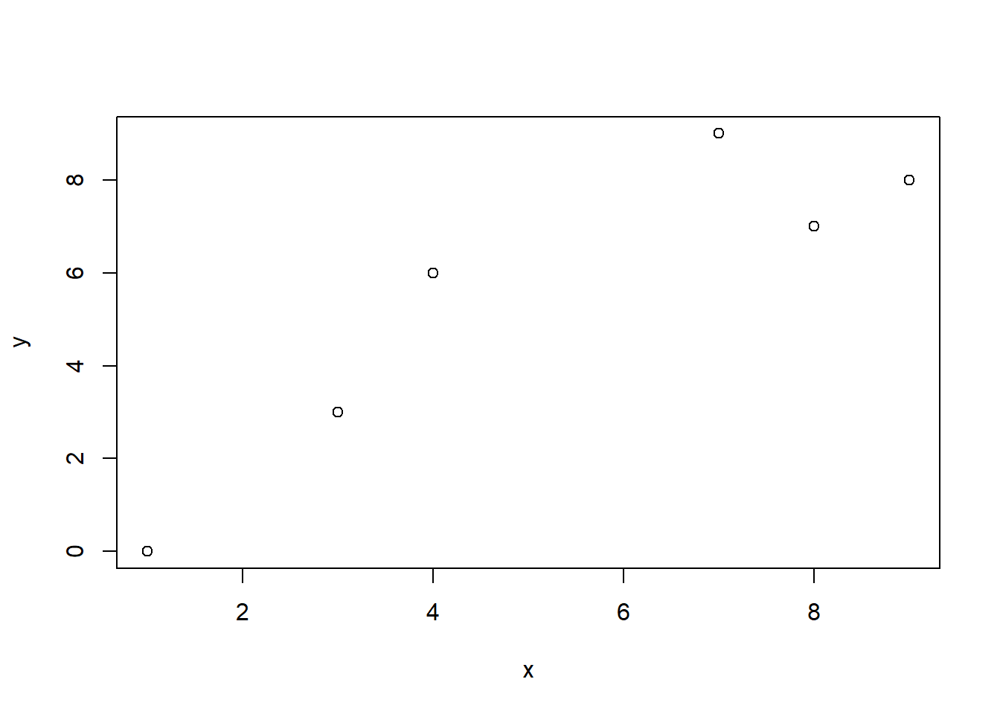
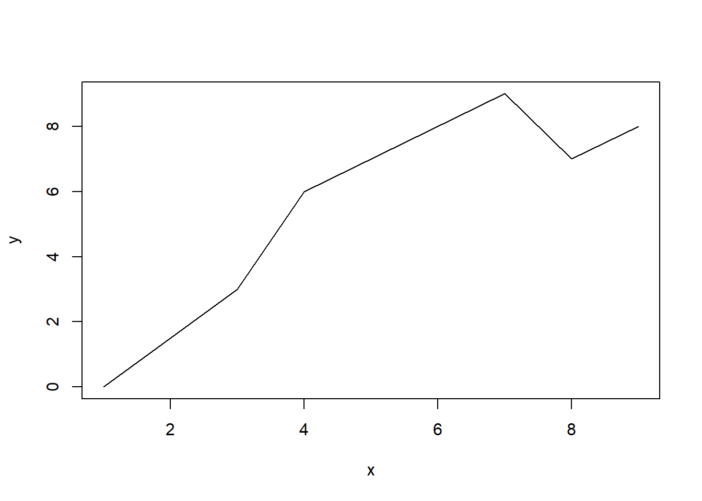
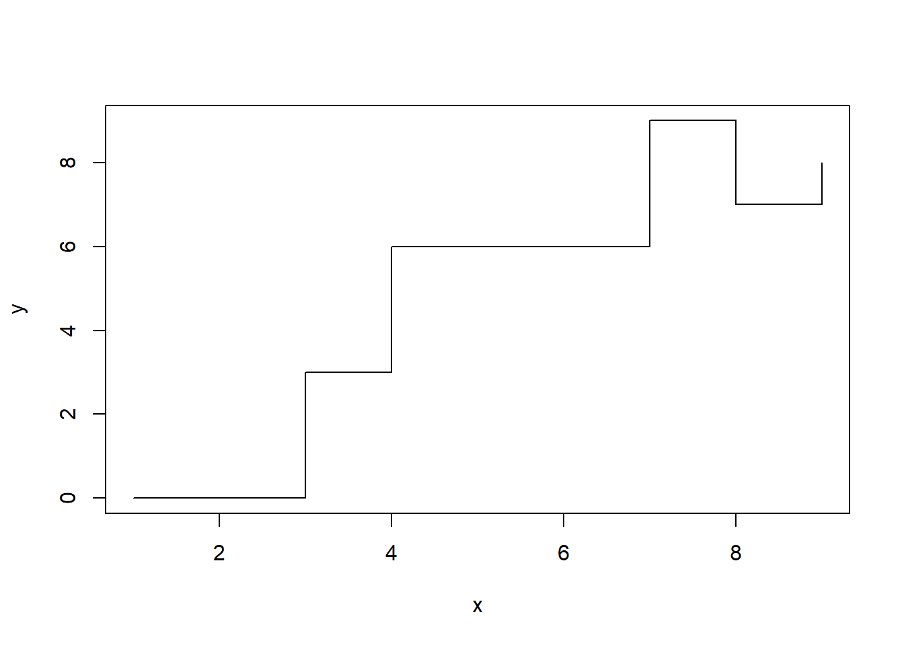
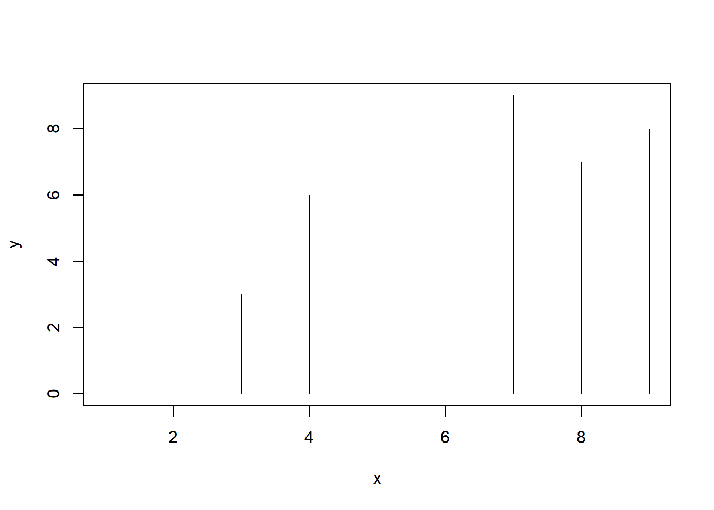
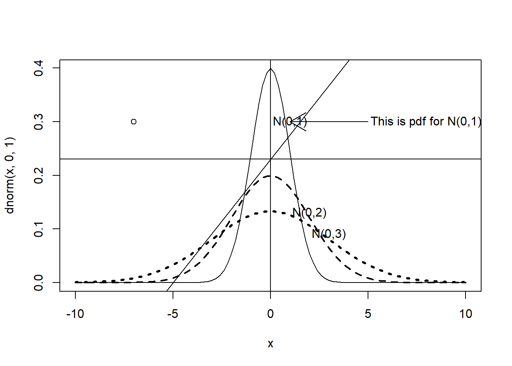
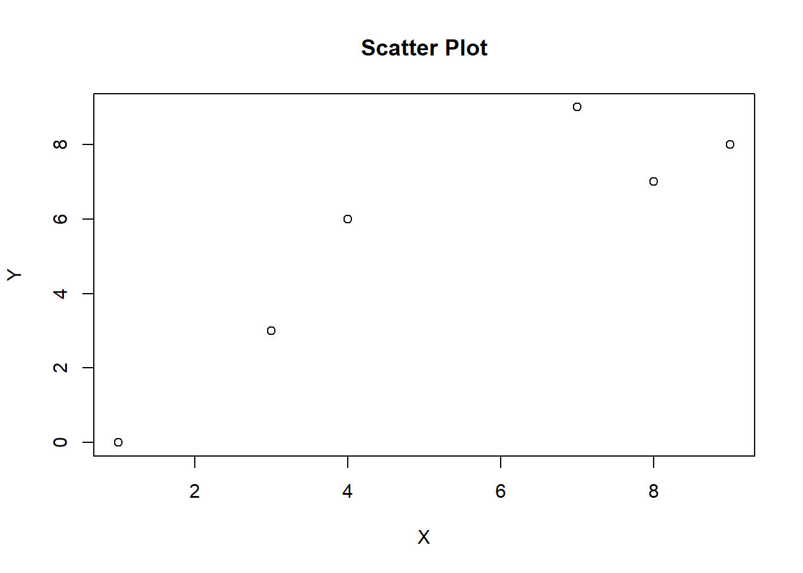
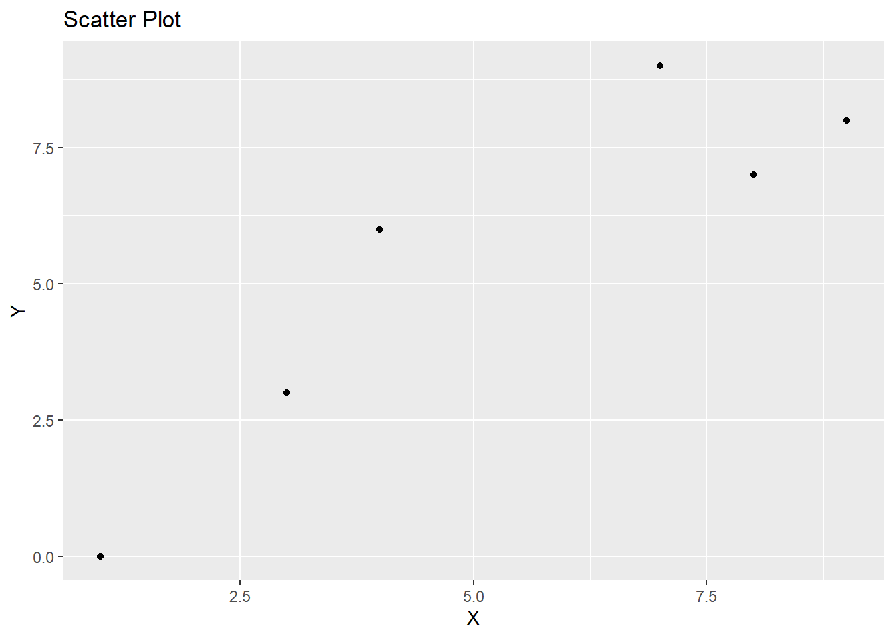
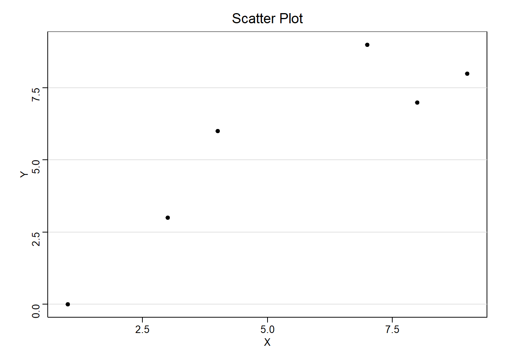

rm(list = ls())Session 1: Introduction
What is R?
R is a programming language and environment for statistical computing and graphics. It is widely used for data analysis, statistical modeling, and visualization.
Why use R?
R is free and open-source, has a large ecosystem of packages, and is widely used in academia and industry for data analysis and visualization.
Install R and RStudio
- While R can be used on its own, its bare interface is not user-friendly.
- People often use R on RStudio, an integrated development environment (IDE).
- RStudio provides many useful functionalities beyond coding and data analysis. This website is created with RStudio (combined with Quarto).
- Download and install R and RStudio Desktop.
RStudio User Guide
- The official RStudio user guide is provided by Posit. For starters, check out the following subsections:
Base R
- R has many built-in commands and tools called base R.
- Advanced R users have developed many useful extensions called packages.
- Oftentimes, you have many different ways (base R and packages) to reach the same goals.
A function to clear working memory.
- Always start your work in blank slate. To clear working memory, use
Basic R functions
- A function takes input(s) and returns an output. For example, \(f(x)=x^2\) takes a real number \(x\) and return the square of it as an output.
- R has many built-in functions so you often do not have to program basic mathematical operations.
abs(-2) # absolute value of -2[1] 2sqrt(4) # square root of 4[1] 2exp(2) # exponential function (e(=2.71) to the power of 2)[1] 7.389056log(1) # natural log[1] 0log(8, 2) # log of 8 to base 2[1] 3round(3.14159, 2) # round 3.14159 to 2 digits[1] 3.14choose(4, 2) # Binomial coefficient "4 choose 2"[1] 6You can define a function on your own.
f1 <- function(x, y) {
z <- x + y
return(z)
} If you plug \(x=3\) and \(y = 4\),
f1(x = 3, y = 4)[1] 7Vectors
You can create a vector of numbers (or other types of information).
a <- c(1, 2, 3) # Generate a 3-dimensional vector a using "c()".
b <- c(4, 5, 6)You can perform vector algebra.
c <- a + b # Vector addition
c[1] 5 7 9d <- b - a # Vector subtraction
d[1] 3 3 3e <- a * b # Element-by-element multiplication
e[1] 4 10 18f <- a %*% b # Inner product of a and b (1*4 + 2*5 + 3*6 = 4 + 10 + 18 = 32)
f [,1]
[1,] 32R functions for vectors
R has built-in functions to work with vectors. For example,
length(a) # Get dimension of vector a[1] 3max(a) # Maximum value in vector a[1] 3min(a) # Minimum value in vector a[1] 1sum(a) # Sum of the elements of vector a (1+2+3=6)[1] 6prod(a) # Product of the elements of vector a (1*2*3=6)[1] 6The following functions make your life easier when you want to create a vector that repeats the same number five times or a vector that includes 10 consecutive numbers from 1 to 10, etc.
zeros <- numeric(5) # Generate a 5-dimensional vector with 5 zeros.
zeros[1] 0 0 0 0 0g <- rep(3, 5) # Generate a 5-dimensional vector with five 3s.
g[1] 3 3 3 3 3h <- seq(10) # Generate a vector of sequence from 1 to 10.
h [1] 1 2 3 4 5 6 7 8 9 10i <- seq(11, 20) # Generate a vector of sequence from 11 to 20.
i [1] 11 12 13 14 15 16 17 18 19 20j <- seq(11, 20, 2) # Generate a vector of sequence from 11 to 20 in steps 2.
j[1] 11 13 15 17 19Special Types of Vectors
Vectors can contain string values (=“texts” that consist of characters, numbers, symbols, or spaces).
# A vector of string values
CA <- c("San Francisco", "San Jose", "Santa Cruz")
CA[1] "San Francisco" "San Jose" "Santa Cruz" # Logical operators tell you whether a statement is true or false.
2 == 2 # 2 is equal to 2.[1] TRUE2 <= 2 # 2 is greater than or equal to 2.[1] TRUE2 < 2 # 2 is strictly greater than 2.[1] FALSE2 != 3 # 2 is not equal to 3.[1] TRUEc(2 == 2, 2 <= 2, 2 < 2, 2 != 3 )[1] TRUE TRUE FALSE TRUE# Logical Vector (Store TRUE/FALSE results of element-wise comparison.)
k <- a < b
k[1] TRUE TRUE TRUEl <- a < d
l[1] TRUE TRUE FALSEFactor vectors (or variables) are a very useful and efficient way to manage categorical and qualitative information. For instance, we have seven students who come from either 1) Tokyo, 2) Kanagawa, or 3) Chiba. We want to create a vector recording this categorical information.
student <- c(1,3,2,2,1,3,3) # Want R to recognize and label 1=in-state, 2=out-of-state, 3=international
student[1] 1 3 2 2 1 3 3studentlabel <- factor(student, labels = c("Tokyo", "Kanagawa", "Chiba")) # 1=Tokyo, 2=Kanagawa, 3=Chiba
studentlabel[1] Tokyo Chiba Kanagawa Kanagawa Tokyo Chiba Chiba
Levels: Tokyo Kanagawa ChibaNaming and Indexing Vectors
You can name each element of a vector.
# Generate a vector with population size for 3 counties.
population <- c(10014009, 3298634, 3186989)
population[1] 10014009 3298634 3186989# Create a vector storing county names
counties <- c("Los Angeles", "San Diego", "Orange")
# Name each element of "population" vector.
names(population) <- counties
populationLos Angeles San Diego Orange
10014009 3298634 3186989 You can access a specific element of a vector.
# To select the n th element of a vector, add [n] after vector name.
population[2]San Diego
3298634 # To select the n th to the m th contiguous elements, use [n:m]
population[2:3]San Diego Orange
3298634 3186989 # You can select an element of a vector by writing a condition in [ ]
population[ population > 10000000]Los Angeles
10014009 population["San Diego"] # You can use a unique element name as a condition. Don't forget ""San Diego
3298634 Data Frames and Data Files
- R is a powerful tool for data analysis. But what is data in the first place?
- Virtually anything can be a data source.
- For example, if you work on facial recognition systems, your input data are facial images (photos) of individuals.
- If you are a health economist, insurance claims might be a valuable data source about healthcare services provided for each patient at a hospital or clinic.
- For example, if you work on facial recognition systems, your input data are facial images (photos) of individuals.
- While raw data can take many different forms, you need to format and organize data properly so that R can perform analyses.
- Typically, you organize data in such a way that each row represents a unit (e.g., person, firm, municipality, country) and each column (variable) represents each unit’s characteristics (e.g., weight, height, wage, years of education).
- In base R, you organize data in data frames.
- You can create a data frame from scratch.
- You can import data organized in Excel (XXX.xlsx) or other formats (e.g., XXX.csv).
- Typically, you do both. You import multiple data files, link and clean them, and put them together in a data frame before starting any sophisticated analysis.
- Here, we construct a data frame by hand from scratch. Suppose we have 3 students and their SAT scores, high school GPA, and college GPA.
# Generate a vector with student names.
student_name <- c("Julian", "Ken", "Amy")
# Generate a vector with SAT scores.
SAT <- c(1100, 1030, 1080)
# Generate a vector with high school GPA.
highschoolGPA <- c(3.8, 3.5, 4.0)
# Generate a vector with college GPA.
collegeGPA <- c(3.9, 3.7, 3.8)# Bundle the 3 column vectors together.
academic <- cbind(SAT, highschoolGPA, collegeGPA)
academic SAT highschoolGPA collegeGPA
[1,] 1100 3.8 3.9
[2,] 1030 3.5 3.7
[3,] 1080 4.0 3.8# Name each row using "student_name" vector.
rownames(academic) <- student_name
academic SAT highschoolGPA collegeGPA
Julian 1100 3.8 3.9
Ken 1030 3.5 3.7
Amy 1080 4.0 3.8# Transform this matrix into a data frame.
academic_data <- as.data.frame(academic)
academic_data SAT highschoolGPA collegeGPA
Julian 1100 3.8 3.9
Ken 1030 3.5 3.7
Amy 1080 4.0 3.8More directly,
data.frame(
student_name = c("Julian", "Ken", "Amy"),
SAT = c(1100, 1030, 1080),
highschoolGPA = c(3.8, 3.5, 4.0),
collegeGPA = c(3.9, 3.7, 3.8)
) student_name SAT highschoolGPA collegeGPA
1 Julian 1100 3.8 3.9
2 Ken 1030 3.5 3.7
3 Amy 1080 4.0 3.8# To access a single variable, write dataframe$variable_name.
academic_data$SAT[1] 1100 1030 1080- You can generate a new variable from existing variables.
# Generate a new variable containing average GPA for each student.
academic_data$averageGPA <- (highschoolGPA + collegeGPA) / 2
academic_data$averageGPA [1] 3.85 3.60 3.90rm(list = ls())Graphs
- Base R can generate graphs.
# To draw a graph for f(x)=x^3, -3 <= x <= 3,
curve(x^3, -3, 3)
# Now generate simple data and plot them in various types of graph
x <- c(1,3,4,7,8,9)
y <- c(0,3,6,9,7,8)plot(x,y) # Scatter plot
plot(x,y, type="l") # line graph
plot(x,y, type="b") # line graph with markerplot(x,y, type = "s") # step function
plot(x,y, type = "h")
- You can overlay additional information on an existing graph.
curve(dnorm(x,0,1), -10, 10, lwd = 1, lty = 1) # Plot a pdf for N(0,1), for x from -10 to 10. lwd and lty are options for line width and line type.
curve(dnorm(x,0,2), add = TRUE, lwd = 2, lty = 2) # Now we add a pdf for N(0,2) on the previous graph.
curve(dnorm(x,0,3), add = TRUE, lwd = 3, lty = 3) # Add one more. Draw a pdf for N(0,3).
abline(v = 0) # abline(v=value(s)) command adds a vertical line. Here we add a vertical line at x=0, which is mean of N(0,1), N(0,2), and N(o,3).
abline(h = 0.23) #Similary, you can add a horizontal line at y=0.23.
slope <- 0.23/5
abline(a=0.23, b=slope) # Here, you can add a linear function with intercept a=0.23 and slope b=0.046 (=0.23/5).
text(1, 0.3, "N(0,1)") #Now we add N(0,1) as a text. (1,0.3) specifies a (x,y) coordinate to which we add the text.
text(2,0.13, "N(0,2)")
text(3,0.09, "N(0,3)")
arrows(5,0.3,1,0.3) # You can add an arrow. Here This arrow is from (5,0.3) to (1,0.3).
text(8,0.3, "This is pdf for N(0,1)")
points(-7, 0.3) # This allows you to add a point at (x,y)=(-7, 0.3).
Tidyverse
- The tidyverse is a collection of R packages for data science.
- To install a new package(s), run install.packages(“package name”)
# install.packages("tidyverse") # Remove the initial # before running the command.- To install multiple packages at once,
# install.packages(c("ggthemes", "data.table", "haven", "here", "tictoc", "janitor", "fixest", "fs")) # Remove the initial # before running the command.- R script often begins with a preamble to load packages.
rm(list = ls())
library(tidyverse)
library(ggthemes)
library(data.table)
library(haven)
library(here)
library(tictoc)
library(janitor)
library(fixest)
library(fs)example <- data.frame(xvar = c(1,3,4,7,8,9),
yvar = c(0,3,6,9,7,8)) - Make a scatter plot with base R.
plot(x = example$xvar, y = example$yvar,
xlab = "X", ylab = "Y", main = "Scatter Plot")
- Make a scatter plot with ggplot2 package.
- Notice that you do not need to type data$variable in tidyverse.
ggplot(aes(x = xvar, y = yvar), data = example) +
geom_point() +
labs(x = "X", y = "Y", title = "Scatter Plot")
- You can use different color schemes. (Economists prefer simple color schemes for publication.)
ggplot(aes(x = xvar, y = yvar), data = example) +
geom_point() +
labs(x = "X", y = "Y", title = "Scatter Plot") +
theme_stata(scheme = "s1color")